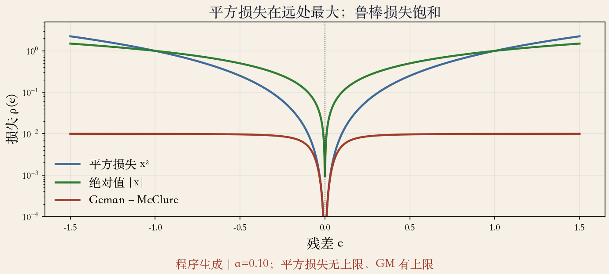
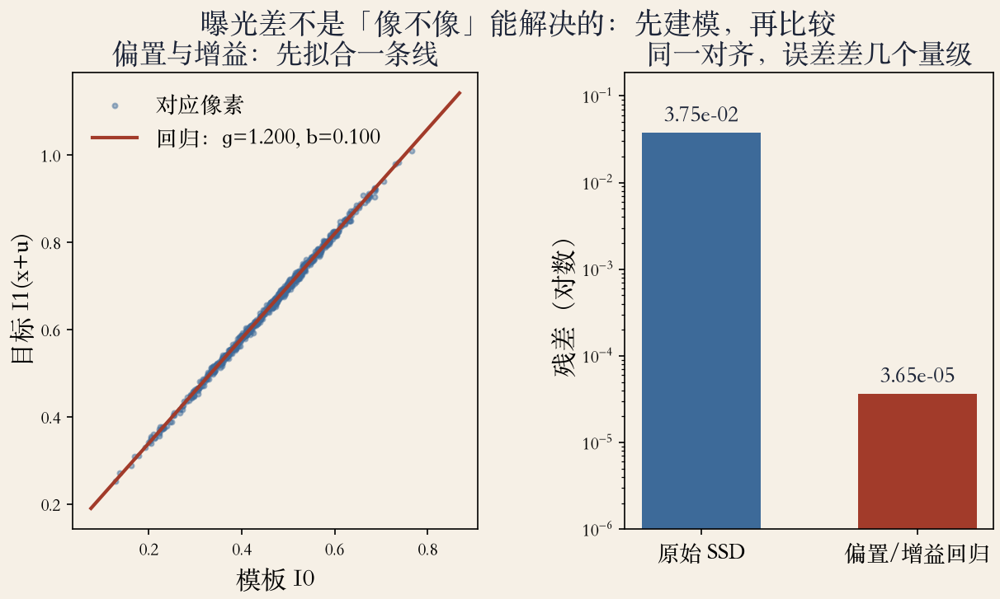
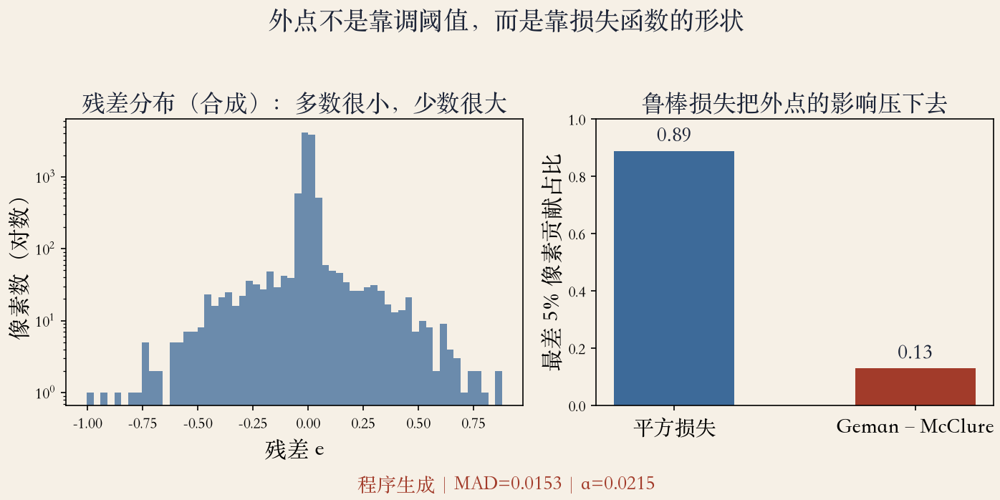

开场 · 从运动到对齐
把运动变成一个函数
上一集说运动很难，这一集先算平移对齐。
只让模板在候选图里挪，找最像的位置。
主角是平方差之和（SSD）。
三个补丁：鲁棒损失、曝光建模、归一化。
依据：原书第 558–562 页
先收窄
只允许平移
模板在候选图里挪
找误差最小的位置
正课第七十五集
01 / 16
定义 · 原书第 558 页
SSD：逐像素平方求和
平移是最简单的对齐方式。
最小二乘就是让 SSD 最小。
模板与候选窗口相减、平方、求和。
模板大小、搜索范围、插值先固定。
依据：原书第 558 页
三个要先定
模板开多大
搜索范围多远
用哪种插值
正课第七十五集
02 / 16
假设 · 原书第 558 页
亮度不变是工作假设
对应像素值保持不变，叫亮度不变。
灯光、自动曝光、反光都会破坏它。
残差不为零，最小二乘会被带偏。
鲁棒损失和曝光建模都在补这个洞。
依据：原书第 558 页
什么时候会破
灯光变化
相机自动曝光
物体反光
正课第七十五集
03 / 16
插值 · 原书第 558 页
位移可以是小数
真实运动不落在整数像素上。
候选图要插值才能取小数位移。
双线性常用，双三次略好。
不插值只剩整像素答案，画面会抖。
依据：原书第 558 页
本集做法
先做整数搜索
亚像素留到下一集
插值本身也会糊一点
正课第七十五集
04 / 16
鲁棒损失 · 原书第 558 页
别让外点说了算
平方损失把大残差放得很大。
一块高亮就能把对齐拉走。
鲁棒函数在残差大时增长变慢。
常用 Huber、Geman–McClure、截断二次。
依据：原书第 558 页
外点从哪来
高光
人影
遮挡
正课第七十五集
05 / 16
SAD · 原书第 559 页
便宜，但原点不可导
绝对差之和就是 L1 范数。
视频编码常用它，因为快。
抗外点比平方损失好。
绝对值在原点不可导，梯度下降会抖。
依据：原书第 559 页
怎么选
直接搜索
平滑近似
看求解器
正课第七十五集
06 / 16
阈值 · 原书第 559 页
Geman–McClure 的阈值
小残差接近平方，大残差饱和。
阈值 a 可以看成外点分界。
MAD 用中位数，少量外点改不动。
阈值取 MAD 乘 1.4。
依据：原书第 559 页
MAD 的好处
中位数稳
少量外点不怕
估内点噪声
正课第七十五集
07 / 16
归一化 · 原书第 559–560 页
别靠少比几个像素取胜
可以给每个像素一个空间权重。
搜索范围大时，SSD 偏向重叠小的解。
除以重叠面积，或开方成 RMS。
归一化后才比较平均每像素误差。
依据：原书第 559–560 页
两个作用
权重可以当遮罩
归一化防作弊
RMS 便于横向比较
正课第七十五集
08 / 16
曝光 · 原书第 560 页
先拟合曝光，再比残差
模型：I1(x+u) ≈ (1+α) I0(x) + β。
α 是增益参数，(1+α) 是乘性系数。
对对应像素做线性回归，先估再比。
偏置和增益可以逐颜色通道估。
依据：原书第 560 页
I1(x+u) ≈ (1+α)·I0(x) + β
α：增益；β：偏置；逐通道估更稳
正课第七十五集
09 / 16
实验一 · 三种损失
远处才见分晓
三条曲线：平方、绝对值、Geman–McClure。
残差很大时，平方损失最高。
绝对值居中，Geman–McClure 饱和。
纵轴是对数，差别在远处。
依据：本集实验

三种损失：平方、绝对值、Geman–McClure 在远处的增长不同｜程序生成，未用教材或论文原图
正课第七十五集
10 / 16
实验二 · 曝光建模
回归后残差小三个量级
左图散点几乎落在一条直线上。
拟合的乘性系数约 1.2。
它对应增益约两成。
原始 SSD 误差约是回归后的一千倍。
依据：本集实验

偏置/增益回归：曝光差先建模，残差能小三个数量级｜程序生成，未用教材或论文原图
正课第七十五集
11 / 16
NCC · 原书第 561 页
减均值、除标准差
原始互相关会被亮块吸引。
NCC 减均值、除标准差，分数在 −1 到 1。
零方差图块无定义，低对比区退化。
本例峰值 0.999，落在真值位移上。
依据：原书第 561 页；本集实验
什么时候失灵
无纹理区
非线性 gamma
局部高光
正课第七十五集
12 / 16
实验三 · 外点贡献
外点只是被压低声音
合成残差里多数很小，少数拖得很远。
最差 5% 像素：平方损失贡献 0.89。
Geman–McClure 只贡献 0.13。
外点没消失，只是话语权变小。
依据：本集实验

外点影响：平方损失贡献 0.89，Geman–McClure 只贡献 0.13｜程序生成，未用教材或论文原图
正课第七十五集
13 / 16
配方 · 四个补丁
补丁怎么按顺序用
选损失：平方、SAD 或鲁棒函数。
处理曝光：偏置/增益或 NCC。
归一化重叠面积。
用残差、峰值、一致性验证。
依据：本集实验；原书第 559–561 页
顺序不固定
先做能解释残差的那步
再看还剩什么
只报一个最小值不够
正课第七十五集
14 / 16
局限 · 平移之外
平移不是全部
只允许平移，默认整块一起动。
真实场景有旋转、缩放、多个运动。
SSD 怕局部极小和无纹理区。
光流约束方程留到第 9 章后面。
依据：原书第 562 页
下一集解决
金字塔由粗到细
亚像素泰勒展开
应付局部极小
正课第七十五集
15 / 16
收束 · 下一集
把 SSD 补完整
SSD 假设亮度不变。
曝光差用回归或 NCC 补。
外点用鲁棒损失或权重压。
下一集：金字塔与亚像素细化。
依据：原书第 558–562 页
三句话
平移先写对
假设要看清
误差要验证
正课第七十五集
16 / 16